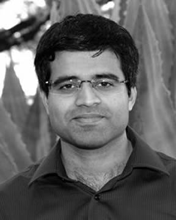

Pradeep Ravikumar Associate Professor |
||
 |
I lead the Foundations of Statistical Machine Learning Group in the Machine Learning Department, School of Computer Science at Carnegie Mellon University. I obtained my PhD from the School of Computer Science at Carnegie Mellon University in 2007, advised by John Lafferty, and was a postdoctoral scholar at the Department of Statistics, University of California, Berkeley through 2009, working with Martin Wainwright and Bin Yu. I have received the Sloan Research Fellowship, the National Science Foundation's CAREER Award, and the Siebel Scholarship. I was Program Chair for the Sixteenth International Conference on Artificial Intelligence and Statistics (AISTATS) 2013. Phd Thesis: Approximate Inference, Structure Learning and Feature Estimation in Markov Random Fields. Honorable Mention, ACM SIGKDD Dissertation Award. Honorable Mention, CMU School of Computer Science Distinguished Dissertation Award. |
|